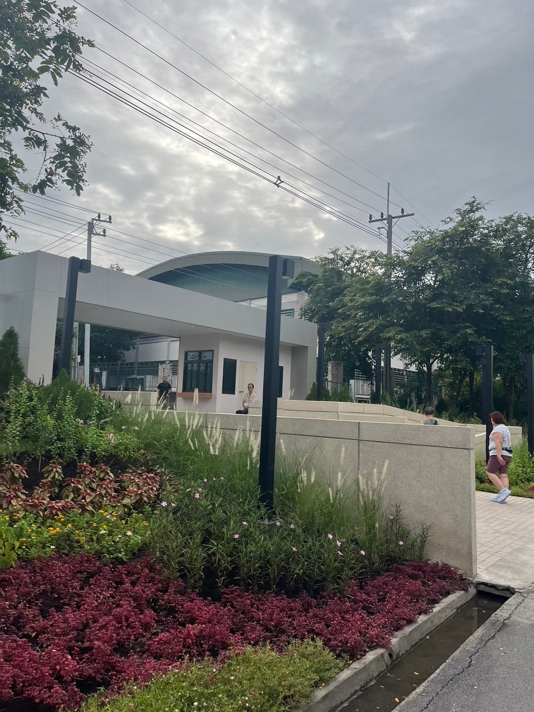

General information
บึงหนองบอน หรือ ศูนย์กีฬาทางน้ำบึงหนองบอน ตั้งอยู่ติดกับสวนหลวง ร.9 ถนนศรีนครินทร์ แขวงหนองบอน เขตประเวศ กรุงเทพฯ ที่นี่เรียกได้ว่าเป็นเหมือนสวนสาธารณะของกรุงเทพ ที่เมื่อเร็วๆ ได้รับการปรับปรุงให้สวยงามและครบครันมากขึ้น ภายในจะมีเส้นทางปั่นจักรยาน รวมถึงบริเวณรอบๆ สระที่มีขนาดใหญ่นั้น จะสามารถเล่นกีฬาทางน้ำได้อย่างหลากหลายมากมายเลยค่ะ เลยทำให้ บึงหนองบอน กลายเป็นพื้นที่ไว้สำหรับพักผ่อนของชาวกรุงนั่นเองค่ะ
บึงหนองบอน มีเนื้อที่กว่า 600 ไร่ เป็นโครงการแก้มลิงตามแนวพระราชดำริในเมื่อปีพ.ศ.2539 สร้างขึ้นเพื่อแก้ปัญหาน้ำท่วมในกรุงเทพฯ ค่ะ เพื่อเอาไว้รองรับน้ำจากฝั่งตะวันออก ต่อมาเลยได้มีการพัฒนาอ่างเก็บน้ำให้กลายเป็นศูนย์ฝึกกีฬาทางน้ำของกรุงเทพฯ และได้มีการฝึกสอนกีฬาทางน้ำให้กับประชาชนทั่วไปอีกด้วยค่ะ ไม่ว่าจะเป็น วินด์เซิร์ฟ การพายเรือคายัค แคนนู เป็นต้น
Nongbon To Suanluang

เมื่อเข้ามาสวนหลวงทางประตู 5 สามารถเดินมาทางซ้ายเพื่อเชื่อมไปถึงบึงหนองบอนได้